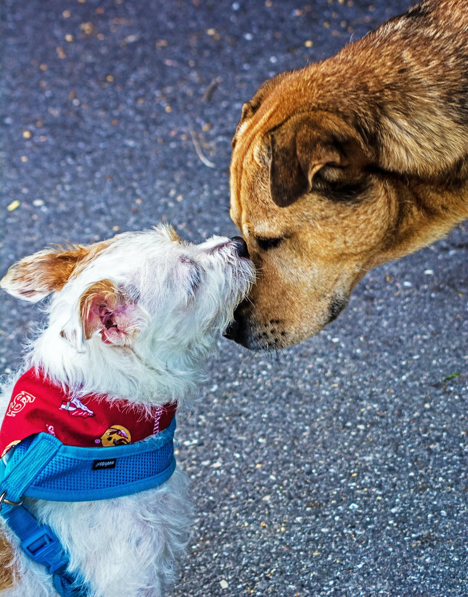

Friends on Floofbook
What does it mean to be Friends on Floofbook?
In many ways, a Floofbook Friend is the same as a real-life friend. These are the floofs that you spend time with and care about. These are the dogs that you visit at the dog-park and spend time with on walks. Floofbook allows for you to stay in contact with your floof-friends when your hooman isn't available to take you for a visit.
Perks of Being Friends on Floofbook
- View each other's timelines.
- Bark and wag on "friends only" posts.
- Get frequent updates about your friend's barks and wags.
- View pictures and profiles of friends.
- Connect with floof friends and family that have other hoomans.
- Bark messages and comments without meeting face-to-face.
- View pictures of family and friends who live far away.
- Tag your Floofbook friend in photos.
- Play virtual games with your Floofbook friends.
- See what floof-friends are currently online to bark.
Are There Different Types of Floofbook Friends?
In real life, there are many different types of friendships. We have acquaintances, walking friends, dog-park buddies, and best floof-friends. Floofbook gives you a few tools for categorizing these levels of friendship. But by default, most friendships are lumped into a general category of “friend.”